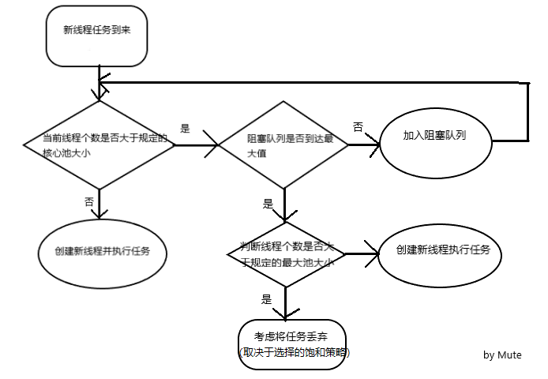

<!DOCTYPE HTML>
<html lang="">
<head><meta name="generator" content="Hexo 3.8.0">
    <!--Setting-->
    <meta charset="UTF-8">
    <meta name="viewport" content="width=device-width, user-scalable=no, initial-scale=1.0, maximum-scale=1.0, minimum-scale=1.0">
    <meta http-equiv="X-UA-Compatible" content="IE=Edge,chrome=1">
    <meta http-equiv="Cache-Control" content="no-siteapp">
    <meta http-equiv="Cache-Control" content="no-transform">
    <meta name="renderer" content="webkit|ie-comp|ie-stand">
    <meta name="apple-mobile-web-app-capable" content="Mute的博客">
    <meta name="apple-mobile-web-app-status-bar-style" content="black">
    <meta name="format-detection" content="telephone=no,email=no,adress=no">
    <meta name="browsermode" content="application">
    <meta name="screen-orientation" content="portrait">
    <link rel="dns-prefetch" href="http://yangliuxiao.top">
    <!--SEO-->

    <meta name="keywords" content="Java,多线程">


    <meta name="description" content="线程池中的阻塞队列选择
BlockingQueue（阻塞队列）详解

1. 线程池执行流程线程池内的线程数的大小相关的概念有两个，一个是核心池大小，还有最大池大小。如果当前的线程个数比核心池个数...">


<meta name="robots" content="all">
<meta name="google" content="all">
<meta name="googlebot" content="all">
<meta name="verify" content="all">

    <!--Title-->


<title>线程池与阻塞队列 | Mute的博客</title>


    <link rel="alternate" href="/atom.xml" title="Mute的博客" type="application/atom+xml">


    <link rel="icon" href="/favicon.jpg">

    


<link rel="stylesheet" href="/css/bootstrap.min.css?rev=3.3.7">
<link rel="stylesheet" href="/css/font-awesome.min.css?rev=4.5.0">
<link rel="stylesheet" href="/css/style.css?rev=@@hash">


    
	<div class="hide">
		<script type="text/javascript">
			var cnzz_protocol = (("https:" == document.location.protocol) ? " https://" : " http://");document.write(unescape("%3Cspan class='cnzz_stat_icon_1263868967 hide' %3E%3Cscript%20src%3D%22https%3A%2F%2Fs95.cnzz.com%2Fz_stat.php%3Fweb_id%3D1272564536%22%3E%3C%2Fscript%3E%3C/span%3E%3Cscript src='" + cnzz_protocol + "s19.cnzz.com/z_stat.php%3Fid%3D1263868967%26show%3Dpic1' type='text/javascript'%3E%3C/script%3E"));
		</script>
	</div>


    

</head>

</html>
<!--[if lte IE 8]>
<style>
    html{ font-size: 1em }
</style>
<![endif]-->
<!--[if lte IE 9]>
<div style="ie">你使用的浏览器版本过低，为了你更好的阅读体验，请更新浏览器的版本或者使用其他现代浏览器，比如Chrome、Firefox、Safari等。</div>
<![endif]-->

<body>
    <header class="main-header" style="background-image:url(/./img/background01.png)">
    <div class="main-header-box">
        <a class="header-avatar" href="/" title="Mute">
            
        </a>
        <div class="branding">
        	<!--<h2 class="text-hide">Snippet主题,从未如此简单有趣</h2>-->
            
                 
            
    	</div>
    </div>
</header>
    <nav class="main-navigation">
    <div class="container">
        <div class="row">
            <div class="col-sm-12">
                <div class="navbar-header"><span class="nav-toggle-button collapsed pull-right" data-toggle="collapse" data-target="#main-menu" id="mnav">
                    <span class="sr-only"></span>
                        <i class="fa fa-bars"></i>
                    </span>
                    <a class="navbar-brand" href="http://yangliuxiao.top">Mute的博客</a>
                </div>
                <div class="collapse navbar-collapse" id="main-menu">
                    <ul class="menu">
                        
                            <li role="presentation" class="text-center">
                                <a href="/"><i class="fa "></i>Home</a>
                            </li>
                        
                            <li role="presentation" class="text-center">
                                <a href="/archives/"><i class="fa "></i>时间轴</a>
                            </li>
                        
                            <li role="presentation" class="text-center">
                                <a href="/about/"><i class="fa "></i>关于</a>
                            </li>
                        
                    </ul>
                </div>
            </div>
        </div>
    </div>
</nav>
    <section class="content-wrap">
        <div class="container">
            <div class="row">
                <main class="col-md-8 main-content m-post">
                    <p id="process"></p>
<article class="post">
    <div class="post-head">
        <h1 id="线程池与阻塞队列">
            
	            线程池与阻塞队列
            
        </h1>
        <div class="post-meta">
    
        <span class="categories-meta fa-wrap">
            <i class="fa fa-folder-open-o"></i>
            <a class="category-link" href="/categories/Java技术/">Java技术</a>
        </span>
    

    
        <span class="fa-wrap">
            <i class="fa fa-tags"></i>
            <span class="tags-meta">
                
                    <a class="tag-link" href="/tags/Java/">Java</a> <a class="tag-link" href="/tags/多线程/">多线程</a>
                
            </span>
        </span>
    

    
        
        <span class="fa-wrap">
            <i class="fa fa-clock-o"></i>
            <span class="date-meta">2019/10/09</span>
        </span>
        
    
</div>
            
            
    </div>
    
    <div class="post-body post-content">
        <p><a href="https://blog.csdn.net/qq_35909080/article/details/87002367" target="_blank" rel="noopener">线程池中的阻塞队列选择</a></p>
<p><a href="https://www.cnblogs.com/aspirant/p/8657801.html" target="_blank" rel="noopener">BlockingQueue（阻塞队列）详解</a></p>
<hr>
<h4 id="1-线程池执行流程"><a href="#1-线程池执行流程" class="headerlink" title="1. 线程池执行流程"></a>1. 线程池执行流程</h4><p>线程池内的线程数的大小相关的概念有两个，一个是<strong>核心池大小</strong>，还有<strong>最大池大小</strong>。如果当前的线程个数比核心池个数小，当任务到来，会优先创建一个新的线程并执行任务。当已经到达核心池大小，则<strong>把任务放入队列</strong>，为了资源不被耗尽，<strong>队列的最大容量可能也是有上限的</strong>，如果达到队列上限则考虑继续创建新线程执行任务，如果此刻线程的个数已经到达最大池上限，则考虑把任务丢弃。</p>
<p></p>
<p>在 java.util.concurrent 包中，提供了 ThreadPoolExecutor 的实现。</p>
<figure class="highlight java"><table><tr><td class="gutter"><pre><span class="line">1</span><br><span class="line">2</span><br><span class="line">3</span><br><span class="line">4</span><br><span class="line">5</span><br><span class="line">6</span><br><span class="line">7</span><br><span class="line">8</span><br></pre></td><td class="code"><pre><span class="line"><span class="function"><span class="keyword">public</span> <span class="title">ThreadPoolExecutor</span><span class="params">(<span class="keyword">int</span> corePoolSize,</span></span></span><br><span class="line"><span class="function"><span class="params">                              <span class="keyword">int</span> maximumPoolSize,</span></span></span><br><span class="line"><span class="function"><span class="params">                              <span class="keyword">long</span> keepAliveTime,</span></span></span><br><span class="line"><span class="function"><span class="params">                              TimeUnit unit,</span></span></span><br><span class="line"><span class="function"><span class="params">                              BlockingQueue&lt;Runnable&gt; workQueue,</span></span></span><br><span class="line"><span class="function"><span class="params">                              ThreadFactory threadFactory,</span></span></span><br><span class="line"><span class="function"><span class="params">                              RejectedExecutionHandler handler)</span> </span>&#123;</span><br><span class="line">&#125;</span><br></pre></td></tr></table></figure>
<blockquote>
<p><strong><em>corePoolSize</em></strong>- 核心池大小，既然如前原理部分所述。需要注意的是在初创建线程池时线程不会立即启动，直到有任务提交才开始启动线程。若想一开始就创建所有核心线程需调用prestartAllCoreThreads方法。</p>
<p><strong><em>maximumPoolSize</em></strong>-池中允许的最大线程数。需要注意的是当核心线程满且阻塞队列也满时才会判断当前线程数是否小于最大线程数，并决定是否创建新线程。</p>
<p><strong><em>keepAliveTime</em></strong> - 当线程数大于核心时，多于的空闲线程最多存活时间</p>
<p><strong><em>unit</em></strong> - keepAliveTime 参数的时间单位。</p>
<p><strong><em>workQueue</em></strong> - 当线程数目超过核心线程数时用于保存任务的阻塞队列。主要有3种类型的BlockingQueue可供选择：无界队列，有界队列和同步移交。</p>
<p><strong><em>threadFactory</em></strong> - 执行程序创建新线程时使用的工厂。</p>
<p><strong><em>handler</em></strong> - 阻塞队列已满且线程数达到最大值时所采取的饱和策略。java默认提供了4种饱和策略的实现方式：中止、抛弃、抛弃最旧的、调用者运行。</p>
</blockquote>
<hr>
<h4 id="2-阻塞队列"><a href="#2-阻塞队列" class="headerlink" title="2. 阻塞队列"></a>2. 阻塞队列</h4><h5 id="2-1-ArrayBlockingQueue"><a href="#2-1-ArrayBlockingQueue" class="headerlink" title="2.1 ArrayBlockingQueue"></a>2.1 ArrayBlockingQueue</h5><p>基于数组的阻塞队列实现，在ArrayBlockingQueue内部，维护了一个<strong>定长数组</strong>，以便缓存队列中的数据对象，这是一个常用的阻塞队列，除了一个定长数组外，ArrayBlockingQueue内部还保存着两个整形变量，分别标识着队列的头部和尾部在数组中的位置。</p>
<p><strong>ArrayBlockingQueue在生产者放入数据和消费者获取数据，都是共用同一个锁对象，由此也意味着两者无法真正并行运行</strong>，这点尤其不同于LinkedBlockingQueue；按照实现原理来分析，ArrayBlockingQueue完全可以采用分离锁，从而实现生产者和消费者操作的完全并行运行。Doug Lea之所以没这样去做，也许是因为ArrayBlockingQueue的数据写入和获取操作已经足够轻巧，以至于引入独立的锁机制，除了给代码带来额外的复杂性外，其在性能上完全占不到任何便宜。 ArrayBlockingQueue和LinkedBlockingQueue间还有一个明显的不同之处在于，前者在插入或删除元素时不会产生或销毁任何额外的对象实例，而后者则会生成一个额外的Node对象。这在长时间内需要高效并发地处理大批量数据的系统中，其对于GC的影响还是存在一定的区别。而在创建ArrayBlockingQueue时，我们还可以控制对象的内部锁是否采用公平锁，默认采用非公平锁。</p>
<h5 id="2-2-LinkedBlockingQueue"><a href="#2-2-LinkedBlockingQueue" class="headerlink" title="2.2 LinkedBlockingQueue"></a>2.2 LinkedBlockingQueue</h5><p>基于链表的阻塞队列，同ArrayListBlockingQueue类似，其内部也维持着一个<strong>数据缓冲队列，该队列由一个链表构成</strong>。而LinkedBlockingQueue之所以能够高效的处理并发数据，还因为<strong>其对于生产者端和消费者端分别采用了独立的锁来控制数据同步</strong>，这也意味着在高并发的情况下生产者和消费者可以并行地操作队列中的数据，以此来提高整个队列的并发性能。</p>
<p>作为开发者，我们需要注意的是，如果构造一个LinkedBlockingQueue对象，而没有指定其容量大小，<strong>LinkedBlockingQueue会默认一个类似无限大小的容量（Integer.MAX_VALUE）</strong>，这样的话，如果生产者的速度一旦大于消费者的速度，也许还没有等到队列满阻塞产生，系统内存就有可能已被消耗殆尽了。</p>
<p>ArrayBlockingQueue和LinkedBlockingQueue是两个最普通也是最常用的阻塞队列，一般情况下，在处理多线程间的生产者消费者问题，使用这两个类足以。</p>
<h5 id="2-3-DelayQueue"><a href="#2-3-DelayQueue" class="headerlink" title="2.3 DelayQueue"></a>2.3 DelayQueue</h5><p>DelayQueue中的元素只有<strong>当其指定的延迟时间到了，才能够从队列中获取到该元素</strong>。DelayQueue是一个没有大小限制的队列，因此往队列中插入数据的操作（生产者）永远不会被阻塞，而只有获取数据的操作（消费者）才会被阻塞。</p>
<p>DelayQueue使用场景较少，但都相当巧妙，常见的例子比如使用一个DelayQueue来管理一个超时未响应的连接队列。</p>
<h5 id="2-4-PriorityBlockingQueue"><a href="#2-4-PriorityBlockingQueue" class="headerlink" title="2.4 PriorityBlockingQueue"></a>2.4 PriorityBlockingQueue</h5><p><strong>基于优先级的阻塞队列（优先级的判断通过构造函数传入的Compator对象来决定），但需要注意的是PriorityBlockingQueue并不会阻塞数据生产者，而只会在没有可消费的数据时，阻塞数据的消费者</strong>。因此使用的时候要特别注意，生产者生产数据的速度绝对不能快于消费者消费数据的速度，否则时间一长，会最终耗尽所有的可用堆内存空间。在实现PriorityBlockingQueue时，内部控制线程同步的锁采用的是<strong>公平锁</strong>。</p>
<h5 id="2-5-SynchronousQueue"><a href="#2-5-SynchronousQueue" class="headerlink" title="2.5 SynchronousQueue"></a>2.5 SynchronousQueue</h5><p>一种<strong>无缓冲的等待队列，类似于无中介的直接交易</strong>，有点像原始社会中的生产者和消费者，生产者拿着产品去集市销售给产品的最终消费者，而消费者必须亲自去集市找到所要商品的直接生产者，如果一方没有找到合适的目标，那么对不起，大家都在集市等待。相对于有缓冲的BlockingQueue来说，少了一个中间经销商的环节（缓冲区），如果有经销商，生产者直接把产品批发给经销商，而无需在意经销商最终会将这些产品卖给那些消费者，由于经销商可以库存一部分商品，因此相对于直接交易模式，总体来说采用中间经销商的模式会吞吐量高一些（可以批量买卖）；但另一方面，又因为经销商的引入，使得产品从生产者到消费者中间增加了额外的交易环节，单个产品的及时响应性能可能会降低。</p>
<p>声明一个SynchronousQueue有两种不同的方式，它们之间有着不太一样的行为。公平模式和非公平模式的区别:</p>
<blockquote>
<p>如果采用公平模式：SynchronousQueue会采用公平锁，并配合一个FIFO队列来阻塞多余的生产者和消费者，从而体系整体的公平策略；</p>
<p>但如果是非公平模式（SynchronousQueue默认）：SynchronousQueue采用非公平锁，同时配合一个LIFO队列来管理多余的生产者和消费者，而后一种模式，如果生产者和消费者的处理速度有差距，则很容易出现饥渴的情况，即可能有某些生产者或者是消费者的数据永远都得不到处理。</p>
</blockquote>
<hr>
<h4 id="3-可选择的饱和策略RejectedExecutionHandler详解"><a href="#3-可选择的饱和策略RejectedExecutionHandler详解" class="headerlink" title="3. 可选择的饱和策略RejectedExecutionHandler详解"></a>3. 可选择的饱和策略RejectedExecutionHandler详解</h4><p><strong>饱和策略</strong>：当线程池中线程已到规定的核心池大小，阻塞队列也已满的情况下，对于新到达的线程任务所采用的的策略。</p>
<h5 id="3-1-AbortPolicy中止策略"><a href="#3-1-AbortPolicy中止策略" class="headerlink" title="3.1 AbortPolicy中止策略"></a>3.1 AbortPolicy中止策略</h5><p>该策略是<strong>默认饱和策略</strong>。</p>
<p>使用该策略时<strong>在饱和时会抛出RejectedExecutionException（继承自RuntimeException）</strong>，调用者可捕获该异常自行处理。</p>
<h5 id="3-2-DiscardPolicy抛弃策略"><a href="#3-2-DiscardPolicy抛弃策略" class="headerlink" title="3.2 DiscardPolicy抛弃策略"></a>3.2 DiscardPolicy抛弃策略</h5><p>不做任何处理直接抛弃任务</p>
<h5 id="3-3-DiscardOldestPolicy抛弃旧任务策略"><a href="#3-3-DiscardOldestPolicy抛弃旧任务策略" class="headerlink" title="3.3 DiscardOldestPolicy抛弃旧任务策略"></a>3.3 DiscardOldestPolicy抛弃旧任务策略</h5><p>先<strong>将阻塞队列中的头元素出队抛弃，再尝试提交任务</strong>。如果此时阻塞队列使用PriorityBlockingQueue优先级队列，将会导致优先级最高的任务被抛弃，因此不建议将该种策略配合优先级队列使用。</p>
<h5 id="3-4-CallerRunsPolicy调用者运行"><a href="#3-4-CallerRunsPolicy调用者运行" class="headerlink" title="3.4 CallerRunsPolicy调用者运行"></a>3.4 CallerRunsPolicy调用者运行</h5><p>既不抛弃任务也不抛出异常，<strong>直接运行任务的run方法，换言之将任务回退给调用者来直接运行。使用该策略时线程池饱和后将由调用线程池的主线程自己来执行任务，因此在执行任务的这段时间里主线程无法再提交新任务</strong>，从而使线程池中工作线程有时间将正在处理的任务处理完成。</p>
<hr>
<h4 id="4-Java提供的四种常用线程池"><a href="#4-Java提供的四种常用线程池" class="headerlink" title="4.  Java提供的四种常用线程池"></a>4.  Java提供的四种常用线程池</h4><h5 id="4-1-newCachedThreadPool"><a href="#4-1-newCachedThreadPool" class="headerlink" title="4.1 newCachedThreadPool"></a>4.1 newCachedThreadPool</h5><figure class="highlight plain"><table><tr><td class="gutter"><pre><span class="line">1</span><br><span class="line">2</span><br><span class="line">3</span><br><span class="line">4</span><br><span class="line">5</span><br></pre></td><td class="code"><pre><span class="line">public static ExecutorService newCachedThreadPool() &#123;</span><br><span class="line">        return new ThreadPoolExecutor(0, Integer.MAX_VALUE,</span><br><span class="line">                                      60L, TimeUnit.SECONDS,</span><br><span class="line">                                      new SynchronousQueue&lt;Runnable&gt;());</span><br><span class="line">&#125;</span><br></pre></td></tr></table></figure>
<p>在newCachedThreadPool中<strong>如果线程池长度超过处理需要，可灵活回收空闲线程，若无可回收，则新建线程</strong>。初看该构造函数时我有这样的疑惑：核心线程池为0，那按照前面所讲的线程池策略新任务来临时无法进入核心线程池，只能进入 SynchronousQueue中进行等待，而SynchronousQueue的大小为1，那岂不是第一个任务到达时只能等待在队列中，直到第二个任务到达发现无法进入队列才能创建第一个线程？   </p>
<p>这个问题的答案在上面讲<strong>SynchronousQueue</strong>时其实已经给出了，要将一个元素放入SynchronousQueue中，必须有另一个线程正在等待接收这个元素。因此即便SynchronousQueue一开始为空且大小为1，第一个任务也无法放入其中，因为没有线程在等待从SynchronousQueue中取走元素。因此第一个任务到达时便会创建一个新线程执行该任务。</p>
<h5 id="4-2-newFixedThreadPool"><a href="#4-2-newFixedThreadPool" class="headerlink" title="4.2 newFixedThreadPool"></a>4.2 newFixedThreadPool</h5><figure class="highlight java"><table><tr><td class="gutter"><pre><span class="line">1</span><br><span class="line">2</span><br><span class="line">3</span><br><span class="line">4</span><br><span class="line">5</span><br></pre></td><td class="code"><pre><span class="line"><span class="function"><span class="keyword">public</span> <span class="keyword">static</span> ExecutorService <span class="title">newFixedThreadPool</span><span class="params">(<span class="keyword">int</span> nThreads)</span> </span>&#123;</span><br><span class="line">       <span class="keyword">return</span> <span class="keyword">new</span> ThreadPoolExecutor(nThreads, nThreads,</span><br><span class="line">                                     <span class="number">0L</span>, TimeUnit.MILLISECONDS,</span><br><span class="line">                                     <span class="keyword">new</span> LinkedBlockingQueue&lt;Runnable&gt;());</span><br><span class="line">&#125;</span><br></pre></td></tr></table></figure>
<p>看代码一目了然了，<strong>线程数量固定，使用无限大的队列</strong>。<strong>极端情况下，会导致资源耗尽。</strong></p>
<h5 id="4-3-newScheduledThreadPool"><a href="#4-3-newScheduledThreadPool" class="headerlink" title="4.3 newScheduledThreadPool"></a>4.3 newScheduledThreadPool</h5><p>创建一个定长线程池，<strong>支持定时及周期性任务执行。</strong></p>
<figure class="highlight java"><table><tr><td class="gutter"><pre><span class="line">1</span><br><span class="line">2</span><br><span class="line">3</span><br></pre></td><td class="code"><pre><span class="line"><span class="function"><span class="keyword">public</span> <span class="keyword">static</span> ScheduledExecutorService <span class="title">newScheduledThreadPool</span><span class="params">(<span class="keyword">int</span> corePoolSize)</span> </span>&#123;</span><br><span class="line">        <span class="keyword">return</span> <span class="keyword">new</span> ScheduledThreadPoolExecutor(corePoolSize);</span><br><span class="line">&#125;</span><br></pre></td></tr></table></figure>
<p>在来看看ScheduledThreadPoolExecutor（）的构造函数</p>
<figure class="highlight java"><table><tr><td class="gutter"><pre><span class="line">1</span><br><span class="line">2</span><br><span class="line">3</span><br><span class="line">4</span><br></pre></td><td class="code"><pre><span class="line"><span class="function"><span class="keyword">public</span> <span class="title">ScheduledThreadPoolExecutor</span><span class="params">(<span class="keyword">int</span> corePoolSize)</span> </span>&#123;</span><br><span class="line">       <span class="keyword">super</span>(corePoolSize, Integer.MAX_VALUE, <span class="number">0</span>, NANOSECONDS,</span><br><span class="line">             <span class="keyword">new</span> DelayedWorkQueue());</span><br><span class="line">   &#125;</span><br></pre></td></tr></table></figure>
<p>ScheduledThreadPoolExecutor的父类即ThreadPoolExecutor，因此这里各参数含义和上面一样。值得关心的是<strong>DelayedWorkQueue这个阻塞队列，它作为静态内部类就在ScheduledThreadPoolExecutor中进行了实现。简单的说，DelayedWorkQueue是一个无界队列，它能按一定的顺序对工作队列中的元素进行排列。</strong></p>
<h5 id="4-4-newSingleThreadExecutor"><a href="#4-4-newSingleThreadExecutor" class="headerlink" title="4.4 newSingleThreadExecutor"></a>4.4 newSingleThreadExecutor</h5><p>创建一个<strong>单线程化的线程池，它只会用唯一的工作线程来执行任务，保证所有任务按照指定顺序(FIFO, LIFO, 优先级)执行</strong>。</p>
<figure class="highlight java"><table><tr><td class="gutter"><pre><span class="line">1</span><br><span class="line">2</span><br><span class="line">3</span><br><span class="line">4</span><br></pre></td><td class="code"><pre><span class="line"><span class="function"><span class="keyword">public</span> <span class="keyword">static</span> ScheduledExecutorService <span class="title">newSingleThreadScheduledExecutor</span><span class="params">()</span> </span>&#123;</span><br><span class="line">        <span class="keyword">return</span> <span class="keyword">new</span> DelegatedScheduledExecutorService</span><br><span class="line">            (<span class="keyword">new</span> ScheduledThreadPoolExecutor(<span class="number">1</span>));</span><br><span class="line"> &#125;</span><br></pre></td></tr></table></figure>
<p>首先new了一个线程数目为 1 的ScheduledThreadPoolExecutor，再把该对象传入DelegatedScheduledExecutorService中，看看DelegatedScheduledExecutorService的实现代码：</p>
<figure class="highlight java"><table><tr><td class="gutter"><pre><span class="line">1</span><br><span class="line">2</span><br><span class="line">3</span><br><span class="line">4</span><br></pre></td><td class="code"><pre><span class="line">DelegatedScheduledExecutorService(ScheduledExecutorService executor) &#123;</span><br><span class="line">            <span class="keyword">super</span>(executor);</span><br><span class="line">            e = executor;</span><br><span class="line">&#125;</span><br></pre></td></tr></table></figure>
<p>在看看它的父类</p>
<figure class="highlight java"><table><tr><td class="gutter"><pre><span class="line">1</span><br><span class="line">2</span><br><span class="line">3</span><br></pre></td><td class="code"><pre><span class="line">DelegatedExecutorService(ExecutorService executor) &#123; </span><br><span class="line">           e = executor; </span><br><span class="line">&#125;</span><br></pre></td></tr></table></figure>
<p><strong>其实就是使用装饰模式增强了ScheduledExecutorService（1）的功能，不仅确保只有一个线程顺序执行任务，也保证线程意外终止后会重新创建一个线程继续执行任务。</strong></p>
<h5 id="4-5-总结"><a href="#4-5-总结" class="headerlink" title="4.5 总结"></a>4.5 总结</h5><p>newCachedThreadPool 使用 SynchronousQueue作为阻塞队列，如果线程池长度超过处理需要，可灵活回收空闲线程，若无可回收，则新建线程。</p>
<p>newFixedThreadPool 使用 LinkedBlockingQueue作为阻塞队列，线程数量固定，使用无界队列。极端情况下，会导致资源耗尽。</p>
<p>newScheduledThreadPool 使用 DelayedWorkQueue 作为阻塞队列，支持定时及周期性任务执行。</p>
<p>newSingleThreadExecutor 使用 DelayedWorkQueue 作为阻塞队列，使用ScheduledThreadPoolExecutor实现，确保只有一个线程顺序执行任务，也保证线程意外终止后会重新创建一个线程继续执行任务。</p>

    </div>
    
    <div class="post-footer">
        <div>
            
        </div>
        <div>
            
        </div>
    </div>
</article>

<div class="article-nav prev-next-wrap clearfix">
    
    
        <a href="/2019/09/25/Java容器类/" class="next-post btn btn-default" title="Java容器类">
            <span class="hidden-lg">下一篇</span>
            <span class="hidden-xs">Java容器类</span><i class="fa fa-angle-right fa-fw"></i>
        </a>
    
</div>


                </main>
                
                    <aside id="article-toc" role="navigation" class="col-md-4">
    <div class="widget">
        <h3 class="title">Table of Contents</h3>
        
            <ol class="toc"><li class="toc-item toc-level-4"><a class="toc-link" href="#1-线程池执行流程"><span class="toc-text">1. 线程池执行流程</span></a></li><li class="toc-item toc-level-4"><a class="toc-link" href="#2-阻塞队列"><span class="toc-text">2. 阻塞队列</span></a><ol class="toc-child"><li class="toc-item toc-level-5"><a class="toc-link" href="#2-1-ArrayBlockingQueue"><span class="toc-text">2.1 ArrayBlockingQueue</span></a></li><li class="toc-item toc-level-5"><a class="toc-link" href="#2-2-LinkedBlockingQueue"><span class="toc-text">2.2 LinkedBlockingQueue</span></a></li><li class="toc-item toc-level-5"><a class="toc-link" href="#2-3-DelayQueue"><span class="toc-text">2.3 DelayQueue</span></a></li><li class="toc-item toc-level-5"><a class="toc-link" href="#2-4-PriorityBlockingQueue"><span class="toc-text">2.4 PriorityBlockingQueue</span></a></li><li class="toc-item toc-level-5"><a class="toc-link" href="#2-5-SynchronousQueue"><span class="toc-text">2.5 SynchronousQueue</span></a></li></ol></li><li class="toc-item toc-level-4"><a class="toc-link" href="#3-可选择的饱和策略RejectedExecutionHandler详解"><span class="toc-text">3. 可选择的饱和策略RejectedExecutionHandler详解</span></a><ol class="toc-child"><li class="toc-item toc-level-5"><a class="toc-link" href="#3-1-AbortPolicy中止策略"><span class="toc-text">3.1 AbortPolicy中止策略</span></a></li><li class="toc-item toc-level-5"><a class="toc-link" href="#3-2-DiscardPolicy抛弃策略"><span class="toc-text">3.2 DiscardPolicy抛弃策略</span></a></li><li class="toc-item toc-level-5"><a class="toc-link" href="#3-3-DiscardOldestPolicy抛弃旧任务策略"><span class="toc-text">3.3 DiscardOldestPolicy抛弃旧任务策略</span></a></li><li class="toc-item toc-level-5"><a class="toc-link" href="#3-4-CallerRunsPolicy调用者运行"><span class="toc-text">3.4 CallerRunsPolicy调用者运行</span></a></li></ol></li><li class="toc-item toc-level-4"><a class="toc-link" href="#4-Java提供的四种常用线程池"><span class="toc-text">4.  Java提供的四种常用线程池</span></a><ol class="toc-child"><li class="toc-item toc-level-5"><a class="toc-link" href="#4-1-newCachedThreadPool"><span class="toc-text">4.1 newCachedThreadPool</span></a></li><li class="toc-item toc-level-5"><a class="toc-link" href="#4-2-newFixedThreadPool"><span class="toc-text">4.2 newFixedThreadPool</span></a></li><li class="toc-item toc-level-5"><a class="toc-link" href="#4-3-newScheduledThreadPool"><span class="toc-text">4.3 newScheduledThreadPool</span></a></li><li class="toc-item toc-level-5"><a class="toc-link" href="#4-4-newSingleThreadExecutor"><span class="toc-text">4.4 newSingleThreadExecutor</span></a></li><li class="toc-item toc-level-5"><a class="toc-link" href="#4-5-总结"><span class="toc-text">4.5 总结</span></a></li></ol></li></ol>
        
    </div>
</aside>

                
            </div>
        </div>
    </section>
    <footer class="main-footer">
    <div class="container">
        <div class="row">
        </div>
    </div>
</footer>

<a id="back-to-top" class="icon-btn hide">
	<i class="fa fa-chevron-up"></i>
</a>


    <div class="copyright">
    <div class="container">
        <div class="row">
            <div class="col-sm-12">
                <div class="busuanzi">
    
        Total:
        <strong id="busuanzi_value_site_pv">
            <i class="fa fa-spinner fa-spin"></i>
        </strong>
        &nbsp; | &nbsp;
        Visitors:
        <strong id="busuanzi_value_site_uv">
            <i class="fa fa-spinner fa-spin"></i>
        </strong>
    
</div>

            </div>
            <div class="col-sm-12">
                <span>Copyright &copy; 2017
                </span>

            </div>
        </div>
    </div>
</div>


    <script async src="//busuanzi.ibruce.info/busuanzi/2.3/busuanzi.pure.mini.js"></script>


<script src="/js/app.js?rev=@@hash"></script>

</body>
</html>